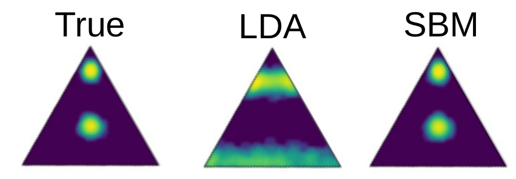
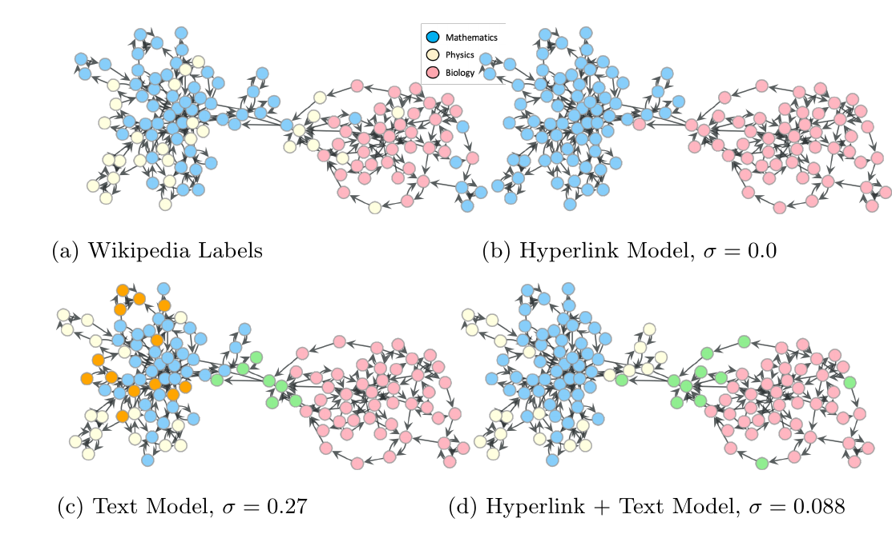

Topic models are a popular way to extract information from text data, but its most popular flavours (based on Dirichlet priors, such as LDA) make unreasonable assumptions about the data which severely limit its applicability. Here we explore an alternative way of doing topic modelling, based on stochastic block models (SBM), thus exploiting a mathematical connection with finding community structure in networks.
To briefly illustrate some of the limitations of Dirichlet-based topic modelling, consider the simple multi-modal mixture of three topics shown below on the left. Since the Dirichlet distribution is unimodal, it severely distorts the topics inferred by LDA, as shown in the middle — even thought it is just a prior distribution over a heterogeneous topic mixture. The SBM formulation, on the other hand, can easily accommodate this kind of heterogeneity, since it is based on more general priors (see here, here and here).
In addition to this, the SBM method is based a nonparametric “symmetric” formulation that allows for the simultaneous hierarchical clustering of documents as well as words. Due to its nonparametric Bayesian nature, the number of topics in each category, as well as the shape and depth of the hierarchy, are automatically determined from the posterior distribution according to the statistical evidence available, avoiding both overfitting and underfitting. To illustrate the application of the method using real data, we show below an example using wikipedia articles.
Using this representation, we can obtain a hierarchical clustering of words (i.e. topics) and documents not only based on the text but taking into account links and metadata information. We illustrate the differences in the document clustering when taking into account different types of data. 
Check how to use topSBM in a simple example and in a case beyond just text data.
The easiest way to run topSBM in your (small) corpus is using the Google Colab tutorial .
The Python package graph-tool is needed, which also contains detailed documentation on SBM inference.
To run it yourself, you need to: